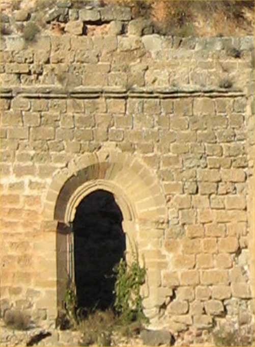
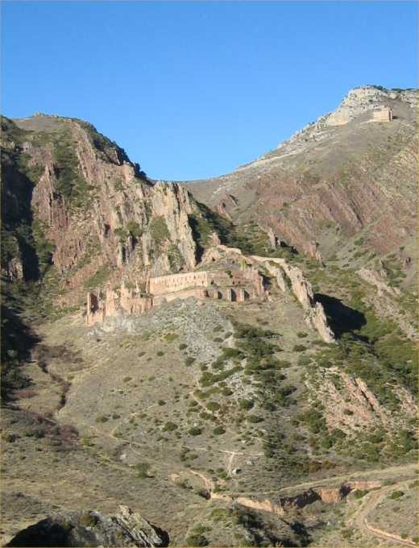

Monasterio de San Prudencio
Ribafrecha - Clavijo · comarca del Leza
- Distancia2,6 kmida y vuelta
- Desnivel170 m
- Tiempo orientativo1 h
- Dificultadbaja
- Época recomendadatodo el año
- Terrenocamino y senda
El origen del Monasterio de San Prudencio se remonta al siglo X. Hoy en día únicamente podemos ‘encantarnos’, sorprendernos y admirarnos visitando sus ruinas. Hasta no llegar al monasterio y pasear por su interior no podemos hacernos idea de la grandiosidad que debió tener en sus tiempos de auge. Y es que es enorme, casi imponente, diría yo.
Antes de realizar la visita os recomiendo que busquéis en Internet información sobre el monasterio (la hay abundante y muy currada), ya que el conocer su historia y sus leyendas será un magnífico aperitivo que os hará disfrutar aún más de esta cita con el pasado.
{kind=link}

{kind=link}

Recorrido
Partimos desde el kilómetro 15,5 de la carretera LR-250, entre Ribafrecha y Leza. Allí la carretera traza una curva sobre un puente. Los restos de la antigua carretera nos servirán entonces de rastro para encontrar el inicio de nuestro paseo. Tomamos un camino que gana altura jalonado por fincas de cultivo y nos mantendrá siempre en la margen izquierda del Barranco de la Barriguilla.
El camino nos acercará hasta el pie del monasterio, siempre visible. Entonces vadeamos un pequeño barranco seco y tomamos un empinado sendero que nos llevará hasta el muro norte del monasterio. A partir de aquí y prestando atención a donde ponemos nuestros pies podremos comenzar a recorrer el laberíntico interior del monasterio.
Si lo deseamos también podemos llegar hasta el monasterio partiendo desde el pueblo de Clavijo. Tomaremos el camino asfaltado que asciende hacia la Ermita de Santiago y antes de llegar a ella tomamos un sendero muy evidente que desciende hacia la derecha buscando un barranco.